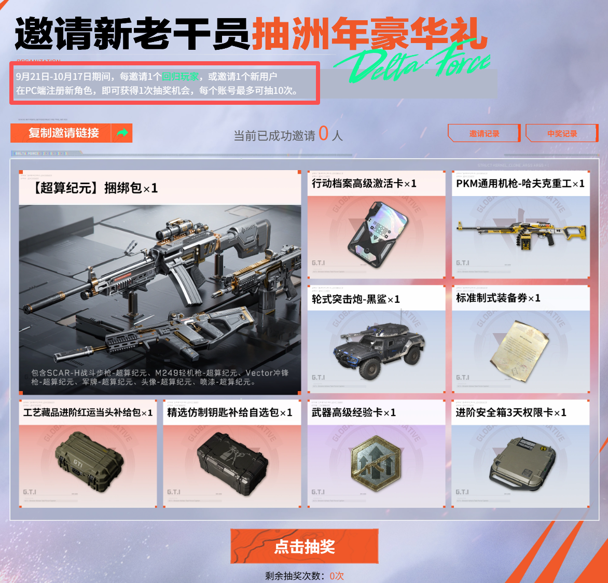
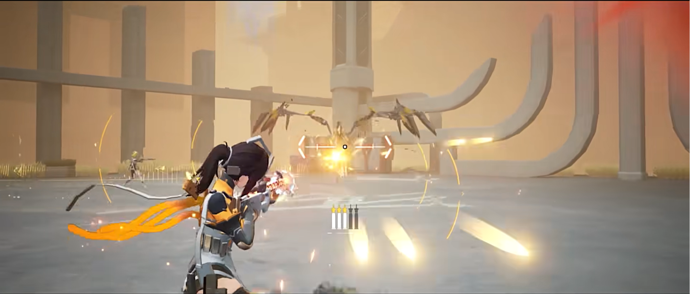
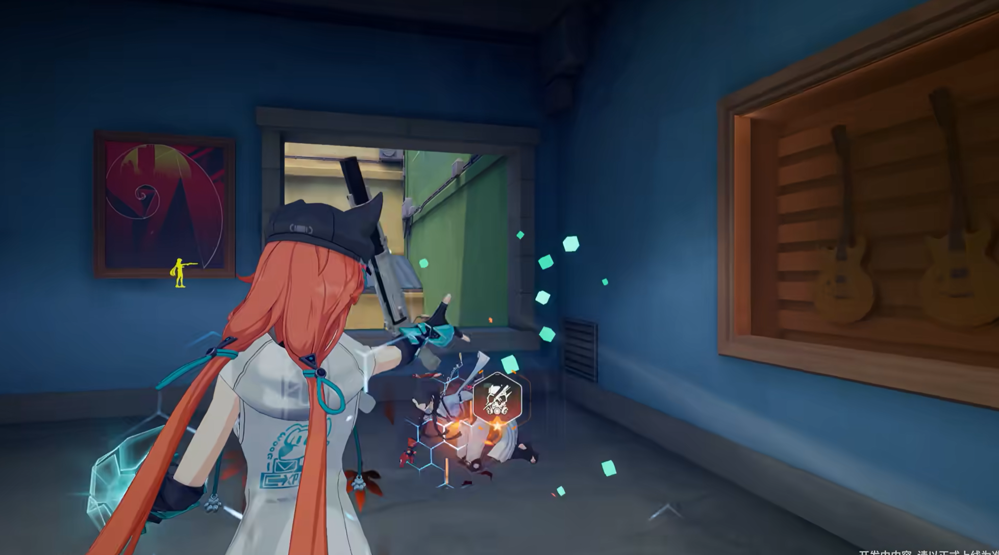
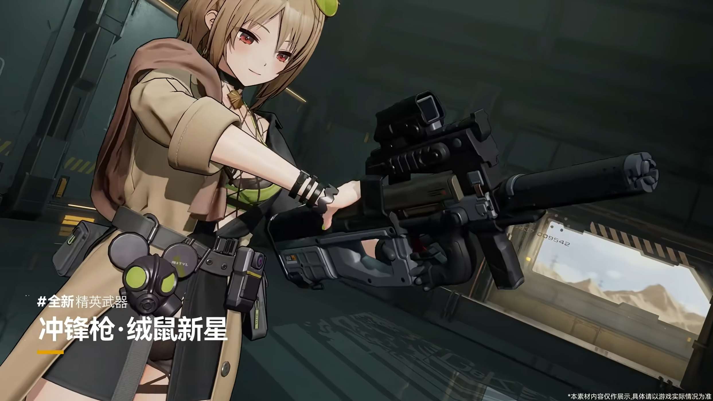
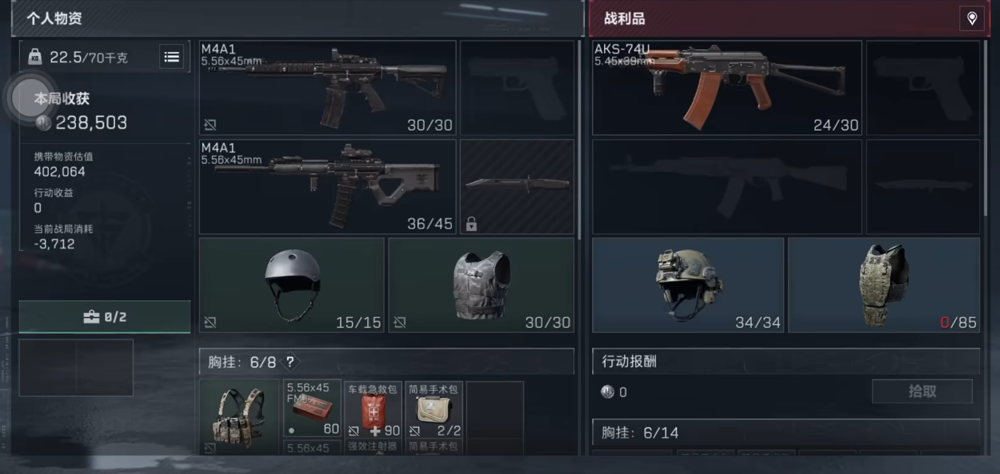
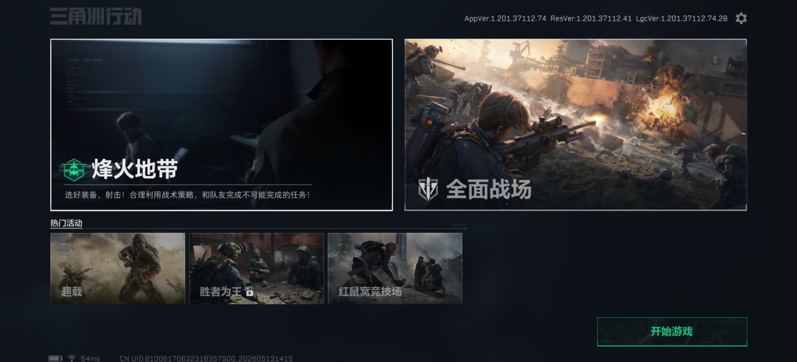
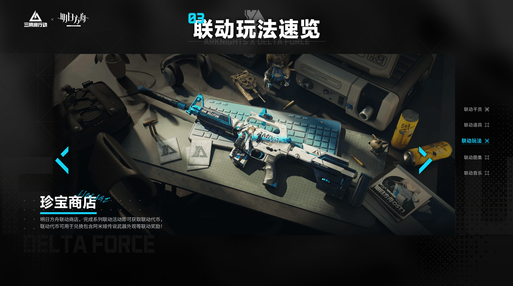

当前，三角洲行动作为一款持续稳定运营近两年的热门FPS品类游戏产品，其国服DAU已突破4100万大关（截至2026年1月）。对于核心FPS用户而言，其核心吸引力在于：
这些优势能够有效吸引核心FPS用户游玩及留存，也是长线稳定运营的基础。然而，对于非FPS用户，尤其是二次元游戏品类的用户而言，三角洲的玩法存在一定门槛：
作为三角洲行动的周年节点活动，"洲年庆"在用户回流、用户拓盘、品牌传播等方面承担重要的职能：

2025年"洲年庆"拉新回流抽奖活动页面截图
结合三角洲行动已有的核心吸引力、对二次元品类游戏用户的门槛，以及"洲年庆"的节点功能，未来"洲年庆"在二次元用户拓盘方面，预期达成以下目标：
对于FPS核心玩家而言，三角洲行动的核心在于"烽火地带"的搜打撤核心循环。热衷于这一玩法的FPS核心用户，往往具有以下特点：
对于二次元游戏用户而言，他们往往具有以下特征：
虽然两个用户群体存在诸多差异，但这并不意味着二次元游戏用户天然排斥FPS游戏品类和搜打撤玩法。以《尘白禁区》《卡拉彼丘》《少女前线2：追放》三款游戏为例，前两款为TPS游戏，第三款为战棋游戏，但都带有"枪械"与"射击"这两个核心要素。与FPS搜打撤游戏不同的是，这三款游戏的核心特色在于二次元风格的美术、游戏叙事和与角色的情感连接，且"竞技性"在一定程度上受到了削弱。

尘白禁区游戏截图。除射击玩法外，该游戏以能够与角色互动为核心卖点

卡拉彼丘游戏截图。该游戏引入"弦化"（纸片人）玩法，具有较强的娱乐性

少女前线2：追放游戏宣传PV截图。该游戏虽有枪械武器要素，但核心玩法是竞技性较低的战棋
综上所述，二次元用户并非排斥射击品类，而是更注重游戏在"射击"以外能否提供其他情绪价值。总体来看，二次元用户游玩FPS搜打撤的核心痛点在于：
因此，如果三角洲行动只强调"硬核射击"和"强竞技性"，则可能难以触达二次元用户。如果能够通过角色塑造、轻量化活动与社交传播内容降低距离感，则有机会吸引一定数量的二次元用户尝试游戏。
当前，三角洲行动的新手引导尚未针对用户水平进行有差异化的引导。对于二次元游戏用户，初次游玩新手引导关难以掌握一些对局中较为关键的机制，例如装备耐久度、背包格扩充机制、物资稀有度区分等，可能造成在游戏前期的对局失败次数较多，造成一定的挫败感，影响留存意愿。例如以下场景：

三角洲行动手机端新手教程关截图。此处对于背包格数如何扩充、装备耐久、被替换的武器的子弹和配件可拆卸等机制没有进行详细说明
因此，为了帮助二次元用户快速入门，掌握游戏关键机制，同时避免给有较多经验多FPS玩家过多引导负担，可以采取针对性引导设计，具体流程如下：
| 设计内容 | 二次元泛用户 | FPS核心用户 |
|---|---|---|
| 进入新手教学关前 | 选择引导模式：【我是新手】或【我有经验】，分别对应二次元用户和FPS核心用户群体的教学引导关卡 | |
| 新手教学关进行中 |
在保留原有引导流程的基础上，增加机制教学节点：
|
复用现有的新手引导关卡 |
| 新手教学关结束后 | 在主界面保留一定天数的新手引导关卡回顾入口 | 复用现有的新手引导步骤 |
通过针对性、差异化的用户群体新手教学关引导，可以有效帮助二次元玩家了解关键游戏机制，降低学习成本，减少新手前期失败次数，避免因反复失败的挫败感影响留存意愿。同时，结合"洲年庆"这一关键拉新回流节点，分类引导的举措可以帮助了解新流入玩家群体中零基础和有基础的玩家比例，便于后续更有针对性的运营规划和活动设计开展。

如图所示，当前游戏内的主要玩法模式均强调"高竞技性"，虽有组队合作，但在PVP对局中仍以攻击、反制对手为主，而二次元品类游戏大多以PVE为主，竞技性较低，且玩家间组队社交玩法往往也不具有强对抗性（如《原神》访问好友世界玩法、《明日方舟》"促融共竞"中的合作通关玩法等）。因此，在"洲年庆"这一核心节点，可以通过多人合作闯关这一PVE玩法，结合当前赛季背景故事，创造更具有叙事沉浸感且贴近二次元用户偏好的玩法，以此提高这类用户的活跃度和长期留存意愿。玩法设计简介如下：
| 活动名称 | 硝烟追忆 |
| 玩法 | PVE多人合作闯关 |
| 定位 | 限时娱乐玩法 |
| 背景设定 | G.T.I.收到一则紧急消息，告知阿萨拉卫队将进行一项秘密军事行动，具有潜在威胁。为此，玩家需要组队前去调查，并阻止阿萨拉卫队的行动。然而，在调查过程中，更深层次的秘密逐渐浮现…… |
| 核心机制 |
|
| 玩法乐趣 |
|
| 玩法奖励 |
|
综上所述，该玩法在保留搜打撤的核心循环基础上，增加了二次元用户偏好的叙事要素，同时减轻竞技性压力。作为限时的、偏娱乐向的玩法，既能够调节游戏节奏，又能够吸引注重叙事和情感连接的二次元用户，同时其叙事性也有带动社区讨论的传播属性和效益，能够提升二次元用户的活跃和持续游玩意愿。
2025年，三角洲行动与明日方舟进行了联动，上线了联动干员外观、联动主题枪械、多种联动玩法等联动内容，在两款游戏的玩家社群中引发了极高的讨论热度，也吸引了一部分非FPS核心用户的明日方舟玩家游玩三角洲行动，达成了较好的联动效益。

联动宣传网页截图
同时，在2025年的"洲年庆"中，制作组官宣与《电锯惊魂》及《鹅鸭杀》联动，同样引发了较高的社区热度。基于已有的联动经验，以及二次元用户群体对ACGN及相关二创的内容偏好，可以在"洲年庆"节点上继续推出二次元IP的异业联动，并开展配套的线上线下社群活动。以《鸣潮》为例，联动方案简介如下：
| 联动IP | 鸣潮 |
| 选择原因 |
|
| 联动内容 |
|
| 联动目标 |
|
针对二次元用户"为爱付费"以及参与同好活动的意愿，可以在"洲年庆"这一节点，通过线上线下社群活动，针对二次元用户进行拉新，方案简介如下：
| 活动形式 | 线上 |
| 活动名称 | 三角洲行动干员同人绘画活动 |
| 活动内容 | 结合当前赛季主题和背景故事，为相关干员绘制同人图，配上专属tag发布至各大社交平台，根据热度进行奖金和游戏道具激励，同时提供参与奖励 |
| 活动目标 |
|
| 活动风险预案 |
|
| 活动形式 | 线下 |
| 活动名称 | 三角洲行动干员coser线下快闪活动 |
| 活动内容 | 结合当前赛季主题和背景故事，邀请coser扮演干员，配以立牌、KV板、游戏内热门道具模型等内容，在线下设立互动打卡点，并对参与的玩家给予周边奖励 |
| 活动目标 |
|
| 活动风险预案 |
|
综上所述，三角洲行动的"洲年庆"是一次重要的用户扩圈机会。对于扩充二次元用户群体而言，需要重点关注有针对性的新手引导、较为轻量化的活动体验、有情绪价值的IP联动，并增强游戏内容的社交与传播属性。若希望进一步拓盘，在保留核心射击玩法体验的同时，也应当逐步提升产品对于泛用户的友好度和内容传播能力。